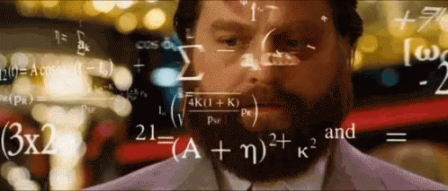

Enter your birthdate and we will tell you if your birthdate is a palindrome
This app checks your birthdate in 4 formats yyyy-mm-dd, dd-mm-yyyy, mm-dd-yy, m-dd-yyyy
e.g. if your birthdate is 01 Aug 1995, then app will check for 19950801, 01081995, 080195, 1081995
